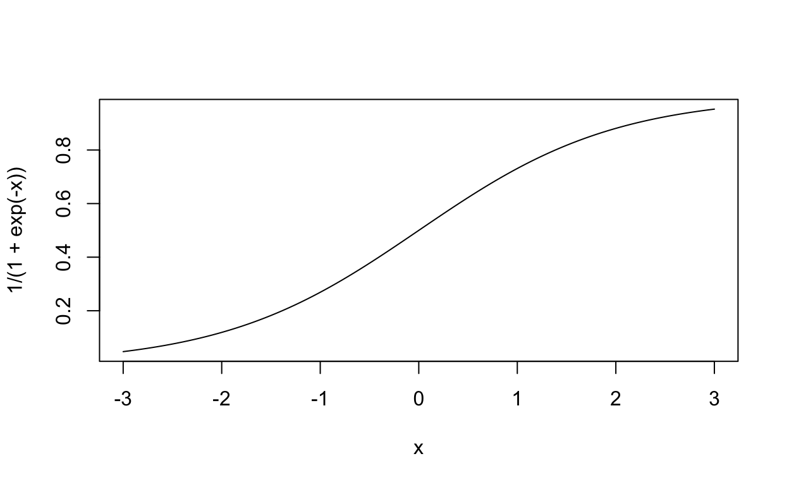

An extension of some existing approaches in network ecology.
The challenge is to create and define prior information for species interactions in food webs. We are interested in creating probabilistic networks. In probabilistic networks, we capture our uncertainty about the presence of an interaction using probability. Probabilistic networks were developed by Poisot et al (2017) as a means of extending the study of networks beyond the case where interactions are defined as 0 and 1.
Cirtwell et al. suggest a bayesian approach to measuring interactions in probabilistic food webs. This approach forms the basis of what follows here. I want to suggest a way to take these priors and modify them to include all the information we have about our system. It seems to me that a good prior should include what we know about the structure of food webs on average, forbidden links in our system, and (possibly!) differences in abundances among species. Such a prior already carries a great deal of ecological information, even before any observations have been included.
Once we have a prior, we can add other observations We have several kinds of observation already:
In one sense, all we have is prior information aboue any one bromeliad food web. We can never directly observe the food web happening inside a specific bromeliad, since it occurs for the most part deep in the mud held in the leaf axils. However, using our observations of feeding interactions and also models of the distribution of invertebrates among bromeliads, we should be able to define a prior for the kinds of food webs that might be observed in a plant of a given size.
The approach suggested by Cirtwell et al. is based on conjugate priors. Conjugate priors are a convenient bayesian trick: when the prior is defined as a specific distribution, there is sometimes a likelihood which in turn gives
library(tidyverse)
library(ggraph)
library(tidygraph)\[ \begin{align} P(L_{i \rightarrow j}) &= \frac{m(S) + p \times (1 - m(S))}{1 - f \times (1 - m(S))} + \alpha \times \frac{(\bar{q} - q_{ij})}{\sigma_{q}} \\ m(S) &= \frac{S - 1}{S^2} \\ f &= \frac{F}{S^2 - (S - 1)} \end{align} \]
Where the following values come directly from the data itself
and there are two parameters that come from elsewhere:
I decided to write \(m(S)\) as a function of \(S\) because it is the same for all communities with the same richness. on the other hand, \(F\) will be different for every single community, even if their species richnesses are the same, because every community will have a different number of forbidden links.
\(q_{ij}\) do not sum to one, because these are the products of relative abundances of species which might interact – they do not include forbidden links. For example if a predator is a carnivore and cannot digest plant matter, no plants are included in the possible resources for this species.
On the other hand, if no links are forbidden, and all species might interact, then \(q_{ij}\) is the outer product of the vector of relative abundances and itself, and therefore it has to sum to 1.
The term on the left in the equation above gives the average connectance of a link in the food web. The term on the right adjusts this average up or down, given the relative abundance of that interaction.
It might make sense to standardize this value, to make the value of \(\alpha\) more intuitive and easier to compare across datasets. After all the actual difference from the mean could matter less than how unusual the frequency of two species encountering each other is. So the parameter \(\alpha\) means “what is the effect of being one standard deviation more frequent than the average interaction”. This value is probably positive, as more frequent interactions might be the most likely to end in violence. An eco-evolutionary interpretation of this is that organisms adapt to eat those species they frequently encounter. Alternatively, this relationship might even be negative. In such a case, we might imagine that more common species are common precisely because they do not interact with the predator – i.e. they dont’ get killed as often. We might set a different (and /or rather wide) prior on this value and marginalize our results over it. One possible value might be \(N(1,1)\)
\(\alpha\) also has a maximum and minimum magnitude: it cannot be so large that it produces values greater than 1 when added to average connectance. That might actually be a case for standardizing by the max relative abundance – rather than the standard deviation – because then the maximum value of alpha would just be \(1-Co_f\), ie 1 minus the left-hand term above. It would have to be bounded between \(-Co_f\) and \(1-Co_f\). I think I could imagine adding the logistic to this relationship and letting it simplify.
If you don’t subtract from the mean – then what have you got? Now you’re always adding something, which seems wrong. By definition some of these are below average.
abd <- rpois(15, rlnorm(15, 4, 3))
relabd <- abd/sum(abd)
mean_r <- mean(relabd)
max_r <- max(relabd)
cof <- 0.3
cof * (1 - mean_r / max_r)
[1] 0.2520583
cof* (mean_r / max_r - 1) ^ -1
[1] -0.3570603
curve(1/(1 + exp(-x)), xlim = c(-3,3))
q_t <- mean_r / max_r
max_a <- cof * ((-q_t ^ 2)/(q_t -1) + 2)
max_a* (q_t - 1)
[1] -0.5117779
curve(1/(1 - q_t) * (1/(1 + exp(-x)) - 0.3), xlim = c(-3,3), ylim = c(-1,1))We can use a logistic curve to constrain the values of \(\alpha\), such that even for the most extremely common species interaction we do not get impossible values.
\[ \frac{1}{1 - q_t} \times (\frac{1}{1 - e^{-\alpha}} - Co_f) \]
Where \(q_t\) is the mean relative abundance divided by the maximum relative abundance. its worth noting that in perfectly even communities this would be 1, which would make most of these expressions undefined.. well its a good thing that is impossible in nature!
alpha in the equation above must be bounded between
\[ \frac{-Co_f}{1-q_t} \]
and
\[ \frac{1-Co_f}{1-q_t} \]
xx <- rpois(25, 6)#runif(25)
sum(xx)
[1] 154
sum(xx - mean(xx))
[1] -3.552714e-15First, in order to calculate the connectance of a food web, we need to know the species richness. This will let us calculate the expected connectance of the food web. Specifically, it gives us information about the minimum proportion of interactions which are necessary (\(m(S)\)).
forbids <- matrix(
c(0,0,0,0,0,
1,1,0,0,0,
1,1,1,0,0,
0,1,1,1,0,
0,1,1,1,1),
ncol = 5,
byrow = TRUE)
abds <- c(250, 170, 70, 35, 5)
m_s <- function(S) (S-1)/S^2
Co_forbid <- function(S, f, p = 0.1){
(m_s(S) + p * (1 - m_s(S))) / (1 - f * (1 - m_s(S)))
}
# make species names
spnames <- paste0("sp", 1:5)
names(abds) <- spnames
# pL , the probability of a link, is equal to connectance at the beginning:
five_sp <- expand_grid(from = spnames,
to = spnames) %>%
mutate(pL = m_s(5) + 0.1*(1-m_s(5)))
plot_simple_graph <- function(df) df %>%
as_tbl_graph %>%
ggraph +
# geom_edge_link(aes(alpha = pL)) +
geom_edge_fan(aes(alpha = pL), show.legend = FALSE) +
geom_edge_loop(aes(alpha = pL)) +
geom_node_point() +
theme_void() +
scale_alpha_continuous(limits = c(0.01, 1))
five_sp %>%
plot_simple_graph
# remove forbidden links
dimnames(forbids) <- list(spnames, spnames)
possible_links_long <- forbids %>%
as.data.frame %>%
rownames_to_column(var = "from") %>%
pivot_longer(starts_with("sp"), names_to = "to") %>%
filter(value>0)
new_pL <- Co_forbid(S = 5, f = sum(forbids==0) / (5^2 - (5 - 1)), p = 0.1)
five_sp_forbid <- five_sp %>%
semi_join(possible_links_long) %>%
mutate(pL = new_pL)
five_sp_forbid %>%
plot_simple_graph
# note this appears lighter because there is no "back" links
# now include abundance information
## again, I have no idea if I am doing this right -- is an adjacenty matrix _from_ predators _to_ prey
five_sp_abds <- five_sp_forbid %>%
mutate(abds = abds[to])
five_sp_abd_graph <- five_sp_abds %>%
group_by(from) %>%
mutate(mean_abd = mean(abds),
sum_abd = sum(abds),
pL = pL * (1 + (abds- mean_abd)/sum_abd))
five_sp_abd_graph %>%
plot_simple_graph() +
geom_node_point(aes(size = sqrt(abds)))
# derive connectance from p
co = m_s(5) + 0.1*(1-m_s(5))
# expected number of links
co * 5^2
# or just sum up all probabilites of links:
sum(five_sp$pL)
## among forbidden links, the sum of all link probabilities is the same number:
five_sp_forbid$pL %>% sum
## likewise with abundance information, it is the same number:
sum(five_sp_abd_graph$pL)
# including missing species -----------------------------------------------
## okay so the smoothing expressions above can't deal with species that are not
## there at all (ie an abundance of 0). So it seems that the right way to do
## that is to include them in forbidden links:
abds_missing <- c(250, 160, 50, 7, 0)
ra <- abds_missing / sum(abds_missing)
could_happens <- (ra %o% ra) * forbids
sum(could_happens == 0 )
sum(forbids == 0)
#' so there would need to be a step like this every time we create posterior predictions for the community, based on their abudncaesc.
#'
#' 1. we predict abundances
#'
#' 2. we combine this with forbidden links to get the number of links that *could* happen
#'
#' 3. we carry on, spreading probability out over all the links in proportion to their abundances (or not).Based on a conversation with Tim, I now think it makes sense to use information on the predator abundances as well to make these spread-out connections. how exactly.